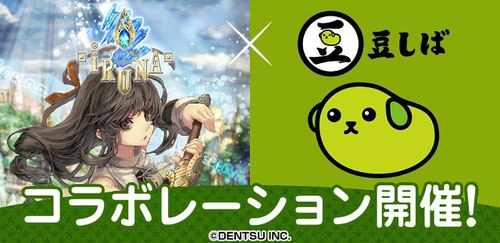
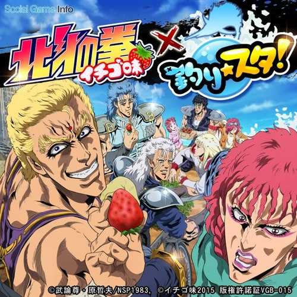
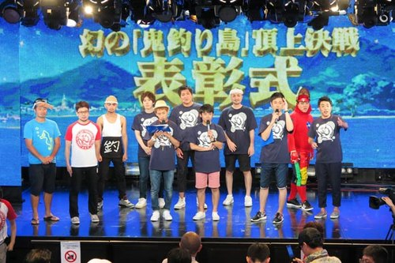

Featured
ANICRA — シード資金調達docomo STARTUP発スピンアウト・2025年8月
FDE（商談〜要件定義〜実装〜経営戦略） ・ CrestLab（現職・業務委託）
- 客先ヒアリング〜PoC開発〜自社SaaS実装まで一気通貫で担当
- 原画・動画・仕上げ工程をAIで自動化するアニメ制作基盤［個別クライアントの制作進行ツールの詳細はNDAのため割愛］
- 事業戦略立案・経営会議でのビジョン策定も担当
学び：現場の声から事業戦略まで、FDEとして一気通貫で動かす力
LuminaLive — 0→1リリース、BtoBへ4展開iOS/Android/Web ・ 2025.03 LAUNCHED
開発ディレクター／プロダクトオーナー ・ AI Impulse（2名体制の業務委託）
- ゲーム設計〜2週間スプリントのスクラム運営（SM兼務）まで開発全般をディレクション
- 音声合成（SoVITS等）・テキスト生成（プロンプト＋ベクトル検索）を自社開発
- ECライブコマース等BtoBへ4展開、TiB有楽町にて2025年8月展示
学び：ひとつの基盤を複数事業へ横展開する設計力
YouTube ・ ECライブコマース
TikTok ・ 本体PR（@lumina8008）
Comdesk Lead — ChatGPT連携をメイン開発者として実装2023年4月
プロダクトマネージャー ・ Widsley（正社員）
- 通話解析AIで"商談成功に繋がる要因"をスコアリングするロジックを考案〜実装〜リリース
- CRM連携エディションを追加、Salesforce／Kintone／HubSpot／Zapier等へ自動連携
- スクラム未導入だったチームにSAFe基盤を新規導入、SM兼務
学び：数字（スコアリング）とAI実装を両立させるPMの視点

イルーナ戦記Online — 月商 約0倍就任9ヶ月でMoM100%超を半年継続
プロデューサー／ディレクター ・ アソビモ（約38名）
- 就任わずか3ヶ月で消費最大化、その後MoM100%超を半年継続
- コラボ交渉・新機能企画・リリースフロー再構築（縦割り解消）
- 消費130%↑を6ヶ月維持・ストアランク2桁復帰、DAU140%↑
学び：「会社の利益・持続可能性・ユーザー満足」3つの両立という意思決定軸
実際のレイド映像（JUNさん撮影）

豆しばコラボ
釣り★スタ for dゲーム — 前月比0%北斗の拳イチゴ味コラボ
PM兼企画ディレクション（dゲーム版ディレクター） ・ グリー
- 北斗の拳（イチゴ味）コラボを企画〜IPホルダー折衝まで牽引
- データ分析を起点にイベント設計・レベルデザインまで担当
- オフラインイベント（ファン感謝祭）も実施、社内消費No.1・社内MVP受賞
学び：IP折衝から現場実装まで、PMとして一気通貫で動く経験

北斗の拳イチゴ味コラボ

ファン感謝祭（オフライン）